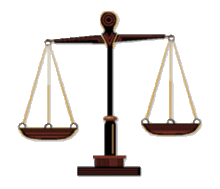

Balance between physical and mental activities
- Home
- Types of sports
- History of sports
- Benefits of sports
- Negative aspects of sports
- Cheating in sports
In general

Its important to have a balance between physical and mental activities. Mental and physical health are two interconnected factors that determine your overall well-being and the quality of life you lead.
Here are some factors why you should keep the balance of the physical and mental activities:
- Improve Focus And Concentration
- Preventing Accidents And Falls
- A Good Night’s Sleep
- Improved productivity
- Self-Confidence
- Live Longer And Happier
More information
Don't get stressy
Stress is a part of everybody’s life today. However, when you have worked out the right balance of physical and mental health; you are less likely to face the adverse effects of everyday stress.
A good sleep helps you to start good in the day
Sleep is body’s mechanism to recuperate and revive itself after everyday tasks. If you maintain your physical and mental health, you may never see yourself looking for aids to help you sleep better.
Improve Focus And Concentration
For the mind to stay focused on the job, both physical and mental health need to be aligned together. While most people think focus and concentration is a mental function, it actually requires a confluence of both mental and physical health.
More productive
A healthy mind and a healthy body are two key ingredients that determine your success. If you are physically fit, you can work more efficiently and when you are mentally fit you can work more effectively.